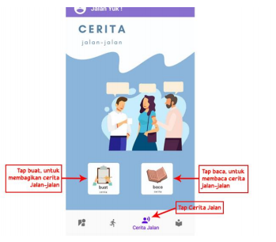

Fitur ini berguna untuk user yang ingin melakukan perjalanan dan
membuka diri untuk user lain bergabung. Tampilan fitur ini adalah
sebagai berikut:
User yang ingin melakukan perjalanan harus mendaftarkan rencana
perjalanannya dengan mengisi kolom sebagai berikut:
Fitur ini berguna untuk user yang ingin bergabung dengan rencana
perjalanan user lain ke tujuan objek wisata yang sama. Fitur ini
akan menampilkan list rencana perjalanan yang dibuat oleh user
lain. Tampilan fitur ini adalah sebagai berikut:
untuk bergabung dengan rencana perjalanan yang telah terdaftar di list
perjalanan, silahkan tap/pilih “join” pada rencana perjalanan yang anda
inginkan.
pada modul ini menggunakan kode:
a = 10
a + 5 = b
print { b }
Fitur ini digunakan untuk user yang ingin membagikan ceritanya
kepada para pembaca teman jalan. Tampilan fitur ini sebagai berikut:

dalam modul ini menggunakan kode
print {"hello world"}